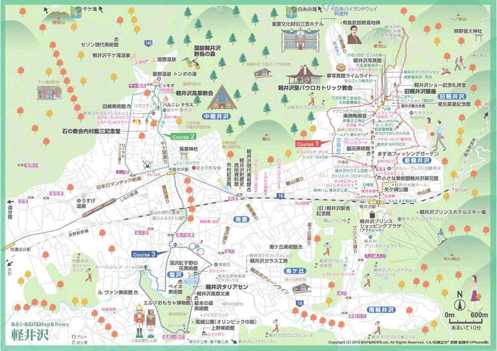

軽井沢 エリアマップ

軽井沢 エリアマップ
旧軽井沢の名所
中軽井沢の名所
軽井沢について
軽井沢は、長野県東部にある高原リゾート地で、豊かな自然と洗練された文化が共存する街です。 夏は涼しく、避暑地として人気があり、四季折々の美しい風景が楽しめます。
旧軽井沢は歴史ある別荘地として、明治時代からの洋風建築や高級別荘が立ち並びます。 中軽井沢は星野エリアとして知られ、おしゃれなショップやレストランが集まっています。 新軽井沢は軽井沢駅周辺で、ショッピングやグルメを楽しめるエリアです。
自然豊かな高原の空気を感じながら、それぞれのエリアの魅力を満喫してください。